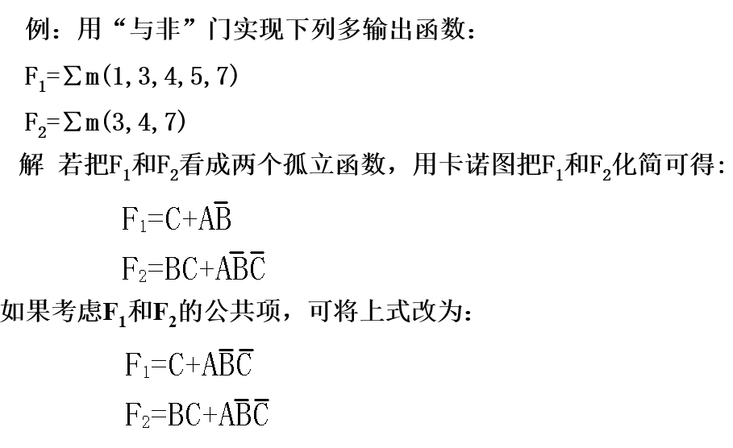

写于2023/10/6，这门课其实还是有点意思的。但是上个月身体原因一直在关心我自己的身体，所以这门课我全翘掉了，一点没听。现在马上就要实验课了，于是打算在国庆的末尾把这门课学了。目的是能做出几个组合逻辑电路的实验项目。
自学参考的内容为老师ppt、各种网上博客。
学完后打算去刷题巩固一下，刷题打算在一个up主视频里刷：传送门
先放一张各种门的符号图，后面忘了的话可以参考：

一. 组合逻辑电路(1)
1.1. 概述
电路分为组合逻辑电路和时序逻辑电路。差别就是组合逻辑电路无记忆功能，时序逻辑电路有。
描述电路的逻辑功能有以下几种形式：
- 语言描述
- 电路图
- 逻辑表达式，即y = f(a1, a2, a3, ..., an)
- 真值表
- 卡诺图
- 波形图
1.2. 组合逻辑电路的分析 和 逻辑函数的设计方法
分析：
即给你一个电路，让你告诉我这个电路是干啥用的。
分析一个组合逻辑电路的固定套路很简单：
- 一层一层写出逻辑表达式
- 对最后得到的逻辑表达式进行化简
- 化简手段1：卡诺图
- 化简手段2：\(A + A \cdot B = A 或 A \cdot (A + B) = A\)
- 化简手段3：\(A + \overline{A}B = A + B 或 A \cdot (\overline{A} + B) = A \cdot B\)
- 化简手段4：\(\overline{A}\overline{C} + A\overline{B} + \overline{B}\overline{C} = \overline{A}\overline{C} + A\overline{B}\)（对于\(\overline{B}\overline{C}\)添项即可证明）
- 化简手段5：\(A \oplus B = \overline{A}B + A\overline{B}\)
- 化简手段6：\(A \odot B = (\overline{A} + B)(A + \overline{B})\)
- 对化简后的逻辑表达式列真值表，观察真值表，观察出此电路的功能
例子：
- T1是个与门，T2是个或门，第一层剩下都是与门，第二层一个或门，第三层一个非门，第四层一个与门，最后一层一个或门。最后通过真值表很容易看出ABC三个输入变量但有两个输出变量。不难想到是一个全加器。A、B是两个加数，C是上一位的进位，F1是当前位，F2是进位。
- 还有许多功能电路啦... ...比如半加器（2输入2输出）、投票表决器（多输入1输出）、奇校验电路（多输入1输出）、一致性电路（多输入1输出）
设计：
告诉你一个功能，让你设计出一个电路来实现它。
也是有固定套路的：
分析功能，确定输入输出变量
- 确定输入输出变量还是有点讲究的，有时候设计的好了可以大大减少运算量和电路的复杂程度。比如下面两个功能，换做是你，你会怎样设计？

- 设计的关键其实是做到尽可能的复用，即对于不同对象的同一属性，尽量用一个变量表达出来。
根据题意，直接构造出电路。或者写出真值表然后写出主析取范式然后再用卡诺图化简后得到最终逻辑表达式
根据逻辑表达式，选取一种门电路，画出电路图
二. 组合逻辑电路(2)
上一节我们已经可以设计出逻辑表达式。但是具体选用哪一种门电路呢？每一种门电路应该如何设计呢？这一节我们就来学习。
2.1. 单输出电路设计
2.1.1. 用与非门设计电路
对于逻辑表达式F = ...中的 + 全部换成 \(\cdot\) 就好了，按照这个思路，只要在 + 的头上画两根取反号就行了，最上面那根保留，下面那根负责把 + 换成 \(\cdot\) 。
但这样得到的实际电路可能耗材过多，实际中有些式子通过观察还能发现可以化的更简，比如下面这个例子：
\(F = A\overline{B} + B\overline{C} + C\overline{D} + D\overline{A} = \overline{\overline{A\overline{B}} \cdot \overline{B\overline{C}} \cdot \overline{C\overline{D}} \cdot \overline{D\overline{A}}}\)
按理说这样就好了，但是还可以化简的。
\(\overline{A\overline{B}} \cdot \overline{B\overline{C}} \cdot \overline{C\overline{D}} \cdot \overline{D\overline{A}} = (\overline{A} + B)(\overline{B} + C)(\overline{C} + D)(\overline{D} + A)\)
上面这个东西，学过二项式定理吗？假如我第一项如果挑B，则第二项不能挑\(\overline{B}\)，只能挑C，那么第三项也只能挑D，依次类推，第四项只能挑A，得到ABCD。同理，如果我第一项挑\(\overline{A}\)，那么我只能得到\(\overline{A}\overline{B}\overline{C}\overline{D}\)。
即：\((\overline{A} + B)(\overline{B} + C)(\overline{C} + D)(\overline{D} + A) = ABCD + \overline{A}\overline{B}\overline{C}\overline{D}\)
对上面那玩意再求两次反，得到\(\overline{\overline{ABCD} \cdot \overline{\overline{A}\overline{B}\overline{C}\overline{D}}}\)
这样子，就得到\(F = \overline{\overline{\overline{ABCD} \cdot \overline{\overline{A}\overline{B}\overline{C}\overline{D}}}}\)
总结下来这个第二种方法就是在第一种方法的基础上把内部通过二项式定理进一步化简。
2.1.2. 用或非门设计电路
对于逻辑表达式F = ...中的 \(\cdot\) 全部换成 + 就好了，按照这个思路，只要在 \(\cdot\) 的头上画两根取反号就行了，最上面那根保留，下面那根负责把 \(\cdot\) 换成 + 。
还有第二种通用的方法，就是将F先求对偶，得到\(F_d\)，这样F就由(xxx) + (xxx) + (xxx)的形式变为(x + x)(x + x)(x + x)的形式了。学过二项式定理吗？同理将\(F_d\)化简，得到最简“与-或”式(yyy) + (yyy)。再在头上加两根取反，最顶上保留，下面那根为了把 + 变成 \(\cdot\) ，最后再对偶回去即可。
上面那段文字是具体过程，流程总结下来如下：
- 对F求对偶\(F_d\)
- 对\(F_d\)展开，利用二项式原理或者卡诺图，得到最简"与-或"式\(F_d'\)
- 对\(F_d'\)取两次反，最上面保留，下面那根化开，得到\(F_d''\)
- 对\(F_d''\)对偶回去
2.1.3. 用与或非门设计电路
这个就更简单了，因为给出的函数表达式都是形如F = xyz + xyz + xyz，所以只需要在F头上加两条杠就好了。
第二种思路就是跟用与非门设计电路的第二种方法一样。加两条杠，最上面不动，下面那个把xyz + xyz + xyz变成()()()型，然后二项式定理展开即可。（如果是与非门第二种设计思路还要将展开的东西再取两次反）
2.2. 多输出电路设计
啊，最直接的想法就是分别把每个输出对应的电路设计出来就好了。但是这样比较憨，当我们化简得到了每个输出对应的逻辑表达式的时候，我们应该能尽可能使每一项复用。看下面这个例子：

可以发现原\(F_1\)中的\(A\overline{B}\)可以变成\(A\overline{B}\overline{C}\)，这样就跟\(F_2\)中的\(A\overline{B}\overline{C}\)一样了，做到了复用。
2.3. 包含无关项的电路设计
其实很简单，看下面这个例子就懂了。


首先我们知道余3码是在8421码的基础上+3得到，因为8421码只有10位，所以余3码也只有10位。而且8421码最小是0000，所以余3码最小是0011（对应十进制数1）。所以这就在输出F中产生了许多无关项d。在画卡诺图时，若不考虑无关项，则把d全置为0；考虑无关项则把d全置为1。最后得到化简后的函数表达式。然后再将这个函数表达式用与非门设计。
2.4. 考虑级数的电路设计
也是看一道例题就可以理解了。
先用最直接的方法，与或非门直接加两条杠结束。与非门直接加两条杠，下面那条杠化开结束。
但是这样设计级数会不会多呢？
如果我们用"与或非门设计电路"中第二种化简方法，试一下：
\(F = \overline{\overline{AB + \overline{A}C}} = \overline{\overline{AB} \cdot \overline{\overline{A}C}} = \overline{(\overline{A} + \overline{B})(A + \overline{C})} = \overline{\overline{A}\overline{C} + A\overline{B} + \overline{B}\overline{C}} = \overline{\overline{A}\overline{C} + A\overline{B}}\)
可以发现，这样设计只有3层。但是原来那样直接加两条杠是4层。所以当考虑电路的级数时，在用与或非门设计电路时，可以考虑进一步化简优化电路的级数。
如果用与非门，就不需要考虑进一步化简了。因为在与非门进一步化简后，还需要再内部再添加两条杠。级数肯定比不继续化简多。
2.5. 综合题
- 设计一个组合电路，将8421BCD码变换为余3码。
先确定输入输出变量，因为8421BCD码是用四个二进制数表示十进制数0~9，所以有四个输入A、B、C、D代表四个二进制数。同理四个输出W、X、Y、Z代表变换后的余3码。
然后列出真值表，因为BCD只能表示十进制0~9，所以注意表中有无关项d。

这里不考虑无关项，所以在后续画卡诺图时都将d置为0。
因为是四个输出，所以属于多输出电路。所以先画四个卡诺图得到四个逻辑表达式（其实对于Z，发现其很有规律不用画卡诺图都可以知道它就是\(\overline{D}\)）
画卡诺图过程省略，得到四个逻辑表达式： \[ W = A + BC + BD \\ X = \overline{B}C + \overline{B}D + B\overline{C}\overline{D} \\ Y = CD + \overline{C}\overline{D} \\ Z = \overline{D} \] 此时我们需要思考，是否能做到项的复用呢？乍一看没发现能复用的，所以先不考虑复用，继续将式子进一步化简先。先从简单的开始画：
\(Z = \overline{D}\)
\(Y = \overline{C} \oplus D\)
\(X = \overline{B}(C + D) + B\overline{(C + D)} = B \oplus (C + D) = B \oplus \overline{\overline{C}\overline{D}}\)
\(W = A + B(C + D) = A + B\overline{\overline{C}\overline{D}}\)
化简后可以发现，\(\overline{\overline{C}\overline{D}}\)这个东西可以做到复用，真不错。
接下来就是选择门电路来设计电路了。这里我选择最常用的与非门 + 异或门设计电路。根据上面的逻辑表达式直接设计即可（W还需化简一下：\(W = \overline{\overline{A} \cdot \overline{B\overline{\overline{C}\overline{D}}}}\)）
最后画出电路：